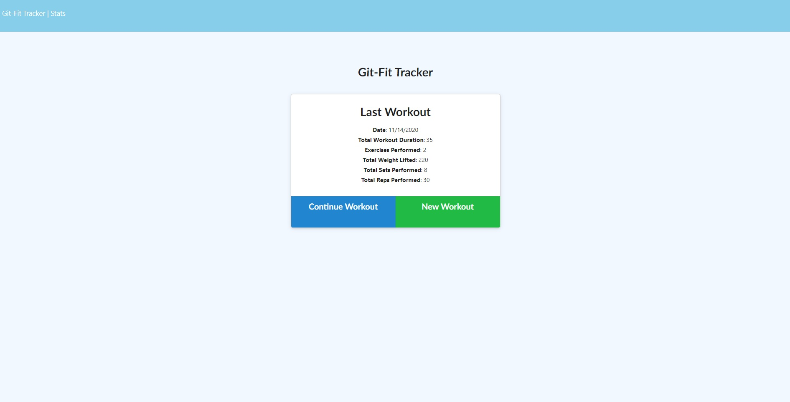

Cocktail-Me is an application that allows a user to explore a database of cocktails and create their own drinks. This application also enables a user to create an account and save their collection of cocktails.
This app demonstrates the use of html, css, handlebars, javascript, and many others. This app was also created in a group dynamic, displaying my ability to work within a group and meet a deadline.
I personally worked on the call to the api, javascript including the functions related to saving and displaying results. After doing what our group divided among us I assisted my fellow teammates to finish the html and css, and made the powerpoint associated with our presentation for this project.
Git-fit is an application that is designed to help a user to record their workouts.
This app demonstrates the use of mongoose, routes, javascript, and working beside models.
